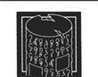
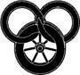

Taştan Taşa
Doğan güneşin ışığı Rand'ı uyandırdı ve düş görüp görmediğini merak etti. Yavaşça doğrulup oturarak çevresine baktı. Her şey ya da neredeyse her şey değişmişti. Güneş ile gökyüzü, solgun ve neredeyse bulutsuz da olsa, görmeyi beklediği gibiydi. Loial ile Hurin hâlâ iki tarafında cüppelerine sarınmış uyuyor, atlarıysa hâlâ birkaç adım ötede dolanıyordu, ama diğer herkes gitmişti. Askerler, atlar, arkadaşları, herkes ve her şey gitmişti.
Oyuğun kendisi de değişmişti ve artık kenarında değil, tam ortasındaydılar. Rand'ın başının dibinde gri, taştan bir silindir vardı, üç karış yüksekliğinde ve tam bir adım genişliğindeydi ve bilmediği bir dilde, yüzlerce, belki de binlerce, derine kazılmış şema ve işaretle kaplıydı. Oyuğun tabanı, yer kadar düzgün, neredeyse ışıltılar saçacak kadar parlatılmış beyaz taşlarla kaplıydı. Farklı renkte taşlardan yapılmış halkalar halinde basamaklar kenara çıkıyordu. Ve kenardaki ağaçlar, içlerinden bir yangın fırtınası geçmiş gibi kararmış ve bükülmüştü. Her şey, olması gerekenden daha solgun, güneş gibi, sislerin içinden görülüyormuş gibi daha silik görünüyordu. Ancak ortada hiç sis yoktu. Gerçek anlamıyla katı görünen, yalnızca üçü ve atlardı. Ama altındaki taşa dokunduğunda, yeterince katı geldi.
Uzanıp Loial ile Hurin'e dokundu. "Uyanın! Uyanın da bana rüya gördüğümü söyleyin. Lütfen, uyanın!"
Hurin irkilerek uyandıktan sonra, ayağa fırladı; ardından ağzı açıldı ve iri, yuvarlak gözleri irileşti. "Neredeyiz biz? Ne oldu? Herkes nerede? Neredeyiz, Lord Rand?" Ellerini ovuşturarak dizlerinin üzerine çöktü, ama gözleri hâlâ etrafta dolanıyordu. "Ne oldu?"
"Bilmiyorum," dedi Rand ağır ağır. "Bunun bir rüya olmasını ümit etmiştim, ama... Belki bir rüyadır." Rüya olmayan rüyalarla yaşadığı deneyimler, ne yinelemek, ne de hatırlamak istediği deneyimle olmuştu. Dikkatle ayağa kalktı. Her şey olduğu gibi kaldı.
"Sanmıyorum," dedi Loial. Sütunu inceliyordu ve mutlu görünmüyordu. Uzun kaşları yanaklarına kadar sarkmıştı ve tüylü kulakları sunmuş gibiydi. "Bunun, dün gece yanında yattığımız taş olabileceğini düşünüyorum. Artık ne olduğunu anladım, sanırım." İlk defa bir şeyi bilmekten dolayı mutsuz olmuş gibiydi.
"Bu..." Hayır. Bunun aynı taş olması, etrafında görebildiklerinden, Mat, Perrin ile Shienarlıların gitmiş, her şeyin değişmiş olmasından daha çılgınca değildi. Kaçtığımı sanmıştım, ama yine başladı ve artık çılgın diye bir şey kalmadı. Ben çıldırmış olmadığım sürece. Loial ve Hurin'e baktı. O çıldırmış gibi davranmıyorlardı; onlar da aynı şeyleri görüyorlardı. Basamaklardaki bir şey gözüne takıldı, maviyle başlayıp kırmızıya kadar giden yedi farklı renk. "Her Ajah için bir tane," dedi.
"Hayır, Lord Rand," diye inledi Hurin. "Hayır. Aes Sedailer bunu bize yapmazdı. Yapmazdı! Ben Işık'ta yürüyorum."
"Hepimiz öyle, Hurin," dedi Rand. "Aes Sedailer sana zarar vermezdi." Ayaklarına dolaşmadığın sürece. Bu bir şekilde Moiraine'in elinden çıkmış olabilir miydi? "Loial, taşın ne olduğunu biliyorum, dedin. Nedir?"
"Galiba biliyorum, dedim, Rand. Eski bir kitaptan bir parça vardı, sadece birkaç sayfaydı, ama sayfalardan birinde bu Taş'ı" -Taş deme Şeklinde önem belirten belirgin bir farklılık vardı- "ya da buna çok benzeyen bir başkasını gösteren bir çizim vardı. Altında da, 'Taş'tan Taş'a uzanır 'eğer' çizgileri, olabilecek dünyaların arasında,' diyordu."
"Bunun anlamı nedir, Loial? Hiç mantıklı değil."
Ogier, koca başını hüzünle iki yana salladı. "Sadece birkaç sayfa vardı. Bir kısmında, Efsaneler Çağı'ndaki Aes Sedailerin, Yolculuk yapabilen, en kudretlilerinin bu Taşları kullanabildiği söylenirdi. Nasıl olduğu söylenmiyordu, ama çıkarabildiğim kadarıyla, belki de o Aes Sedailerin, Taşları bu dünyalara yolculuk etmek için kullandıklarını sanıyorum." Kurumuş ağaçlara baktı ve kenarın dışındakiler! düşünmek istemiyormuş gibi gözlerini hemen indirdi. "Yine de Aes Sedailer ya da biz onları kullanabilsek bile, yanımızda Güç'ü yönlendirebilecek Aes Sedai yokken nasıl yapılabilir, bilmiyorum."
Rand'ın teni karıncalandı. Aes Sedailer onları kullanıyordu. Erkek Aes Sedailerin olduğu Efsaneler Çağı'nda. Uykuya dalarken o tedirgin edici ışıltıyla dolu boşluğun etrafında kapanışını hayal meyal hatırlıyordu. Köydeki o odayı ve kaçmak için uzandığı ışığı da hatırlıyordu. Ya bu Gerçek Kaynak'ın erilyarısıysa... Yo, olamaz. Amaya öyleyse? Işık adına, ben kaçıp kaçmamayı düşünürken ta en başından beri kafamın içindeymiş. Belki de bizi buraya ben getirmişimdir. Bunu düşünmek istemiyordu. "Olabilecek dünyalar mı? Anlamıyorum, Loial."
Ogier, kocaman omuzlarını huzursuzca silkti. "Ben de, Rand. Büyük bölümü şu minvaldeydi. 'Bir kadın sola ya da sağa giderse, Zaman'ın akışı ikiye bölünür mü? Çark bu durumda iki Desen mi dokur? Dönüşlerinden her biri için bin tane mi? Yıldızlar kadar çok mu? Biri gerçek, diğerleri gölgeler ve yansımalardan ibaret mi?' Görüyorsun ya, pek sarih değildi. Daha çok birbiriyle çelişiyormuş gibi görünen sorulardan oluşuyordu. Metin pek de uzun değildi üstelik." Sütuna bakmaya döndü, ama ona artık gitmesini istermiş gibi bakıyordu. "Bu Taşlardan dünyanın dört bir yanına dağılmış pek çoğu olmalı, ya da bir zamanlar olmalıymış, ama kimsenin bunlardan birini bulduğunu duymamıştım. Kimsenin uzaktan yakından buna benzer bir şey bulduğunu duymadım."
"Lordum Rand?" Artık ayağa kalkmış olan Hurin, daha sakin görünüyordu, ama paltosunu bel hizasından iki eliyle sıkı sıkı tutmuştu ve yüzünde heyecanlı bir ifade vardı. "Lordum Rand, bizi geri döndürürsünüz, değil mi? Geriye, ait olduğumuz yere? Benim bir karım ve çocuklarım var, Lordum. Melia benim ölmeme üzülmesine üzülür, ama elinde annenin kucaklamasına verecek bir naşım bile olmazsa, hayatının son gününe kadar yas tutar. Anlıyorsunuz, değil mi, Lordum? Onu habersiz bırakamam. Ben ölürsem de, ona bedenimi götüremeseniz bile, ona haber verin ki, elinde hiç değilse bu kadarı olsun." Sözlerinin sonuna geldiğinde sorgulamayı bırakmıştı. Sesine, bir kendine güven izi gelmişti.
Rand bir kez daha bir lord olmadığını söylemek için ağzını açtı, a konuşmadan kapadı. Bu artık sözü edilecek kadar önemli değildi Onu bu işe sen soktun. Bunu inkâr etmek istese de ne olduğunu her zaman kendiliğinden olurmuş gibi görünse de yönlendirebildiğini biliyordu. Loial, Aes Sedailerin Taşları kullandığını söylemişti ve bunun anlamı Tek Güç'tü. Loial'in bildiğini söylediği şeyden emin olabilirsin -Ogier asla bilmediği bir şeyi bildiğini iddia etmezdi- ve yakınlarda Güç'ü kullanabilecek kendisinden başka kimse yoktu. Onu bu işe sen soktun, sen çıkarmalısın. Denemek zorundasın.
"Elimden geleni yapacağım, Hurin." Hurin Shienarlı olduğu için de ekledi, "Soyum ve şerefim üzerine yemin ederim. Bir çobanın Soy'u ve bir çobanın şerefi de olsa, bir lordunkiler yerine bunlarla idare edeceğim."
Hurin, paltosunu bıraktı. Güven gözlerine de ulaşmıştı. Yerlere kadar eğilerek selam verdi. "Sana hizmet etmekten şeref duyarım, Lordum."
Rand'ın, içi suçluluk duygusuyla doldu. Shienar Lordları her zaman sözünü tuttuğu için onu eve götüreceğini sanıyor. Ne yapacaksın Lord Rand? "Bunlara gerek yok, Hurin. Eğilmene gerek yok. Ben-" Aniden adama lord olmadığını bir kez daha söyleyemeyeceğini anladı. Koklayıcıyı ayakta tutan tek şey bir lorda duyduğu inançtı ve bunu da ondan alamazdı, en azından henüz değil. Orada değil. "Eğilmek yok," diye bitirdi acemice.
"Nasıl derseniz, Lord Rand." Hurin'in sırıtışı neredeyse Rand'ın onu ilk gördüğü zamanki kadar genişti.
Rand gırtlağını temizledi. "Evet. Eh, böyle diyorum."
İkisi de, Loial merak, Hurin güvenle onu izliyor, ne yapacağını merak ediyordu. Onları buraya ben getirdim. Ben getirmiş olmalıyım. Bu yüzden de onları geri götürmem gerek. Bunun da anlamı...
Derin bir nefes alıp beyaz parke taşlarının üzerinden geçerek simgelerle kaplı silindirin yanına gitti. Simgelerin her birinin etrafında bilmediği bir lisanda yazılmış ufak satırlar, kavisler ve sarmallarla oluşan, aniden çentikli kancalar ve açılarla döndükten sonra akmaya eyam eden tuhaf harfler vardı. Hiç değilse Trolloc alfabesiyle yazılmamıştı. Ellerini istemeye istemeye sütunun üzerine koydu. Alelade bir kutu, cilalanmış taş gibiydi, ama tuhaf bir şekilde kaygandı, yağlı maden gibi.
Gözlerini kapadı ve alevi oluşturdu. Boşluk ağır ağır, gönülsüzce geldi. Onu tutanın kendi korkusu, kalkıştığı işten duyduğu korku olduğunu biliyordu. Korkusu, aleve katmasıyla birlikte yenileniyordu. Bunu yapamam. Güç'ü yönlendiremem. İstemiyorum. Işık adına, başka bir yolu olmalı. Keyifsizce düşüncelerini dinmeye zorladı. Yüzünde boncuk boncuk terlerin biriktiğini hissedebiliyordu. Azimle korkularını tüketen alevi itmeye, onu büyütmeye, büyütmeye devam etti. Ve boşluk oradaydı.
Özü, boşluğun içinde yüzüyordu. Gözleri kapalıyken bile ışığı -saidini- görebiliyor, kendisini saran, her şeyi saran, her şeyin içine işleyen sıcaklığını hissedebiliyordu. Yağlı kağıdın ardından görülen bir mum alevi gibi sallanıyordu. Küflü yağ. Leş kokulu yağ.
Ona uzandı -nasıl uzandığından emin değildi, ama bu bir devinim, ışığa, saidin'e doğru uzanma hareketiydi- ve parmaklarını suyun içinden geçirir gibi hiçbir şey yakalayamadı. Pisliklerin alttaki temiz suyu üzerinde yüzdüğü, yağla kaplı bir göl gibi geliyordu, ama suyu avucuyla alamıyordu. Zaman zaman parmaklarının arasından süzülüyor, geride sudan bir damla bile kalmıyordu, elindeki tek şey tenini karıncalandıran yağlı pislikti.
Çaresizce, oyuğu Ingtar ile atlarının yanında uyuyan mızraklılar, Mat ile Perrin, bir ucu dışında gömülmüş yatan Taş'la birlikte eskiden olduğu gibi hayalinde canlandırmaya çalıştı. İmgeyi, boşluğun dışında etrafını saran boşluk kabuğuna tutunur halde oluşturdu. İmgeyi ışığa bağlamaya, ikisini zorla bir araya getirmeye çalıştı. Oyuk eskisi gibiydi, Loial ile Hurin'de orada bir aradaydı. Başı ağrıyordu. Mat, Perrin ve Shienarlılarla birlikte. Zihninin içinde, onu dağlayarak. Birlikte!
Boşluk jilet kadar keskin bir parçaya bölünerek zihnini kesti.
Bir ürpertiyle gözlerini iri iri açıp sendeleyerek geriledi. Elleri Taş'a bastırmaktan acıyordu, kollarıyla omuzları ağrılarla doluydu; üzerini kaplayan pislik hissi yüzünden içi bulanıyordu ve kafası... Nefes alışverişini düzenlemeye çalıştı. Bu daha önce hiç olmamıştı.
Boşluk gittiği zaman, patlayan bir baloncuk gibi, bir parıldamayla olurdu bu. Asla cam gibi kırılmazdı. Kafası bin tane kesik aniden olmuş ve acısı daha gelmemiş gibi hissizdi. Ama kesiklerden her biri, bıçakla yapılmış kadar gerçek bir his vermişti. Şakağına dokundu ve parmaklarında kan görmeyince şaşırdı.
Hurin hâlâ orada durmuş onu izliyordu, hâlâ güven doluydu. Aslına bakılırsa, Koklayıcı her dakika daha çok güvenle doluyordu. Lord Rand bir şey yapıyordu. Lordlar bunun içindi. Başının içindeki küflü yağ hissi - Işık adına, içimde! Onu içimde istemiyorum!- ağır ağır soluyordu, ama hâlâ kusabileceğim düşünüyordu. "Birkaç dakika sonra tekrar denerim."
Sesinin güvenli çıktığını ümit etti. Taşların nasıl çalıştığı, yaptığı şeyin ufak da olsa başarıya ulaşma olasılığının olup olmadığını bilmiyordu. Belki de onları çalıştırmanın kuralları vardır. Belki de özel bir şey yapman gerekir. Işık adına, belki de aynı Taş'ı iki kez kullanamıyorsundur ya da... Bu düşünce çizgisini kesti. Böyle düşünerek sağlanacak bir kazanç yoktu. Bunu yapmak zorundaydı. Loial ve Hurin'e bakarak, Lan'in görevin insanın üzerine bir dağ gibi abanmasından bahsederken ne kastettiğini anladı.
"Lordum, bence..." Hurin bir an mahcup görünerek sustu. "Lordum, belki Karanlıkdostları bulursak, içlerinden birine nasıl dönebileceğimizi söyletebiliriz."
"Geri dönmemiz için ne gerektiği hakkında doğru bir cevap vereceğini bilsem, Karanlıkdostlarına, hatta Karanlık Varlık'ın kendisine bile sormaya razıyım," dedi Rand. "Ama sadece biz varız. Sadece biz üçümüz." Sadece ben. Bunu yapması gereken sadece benim.
"İzlerini takip edebiliriz, Lordum. Onları yakalarsak..."
Rand, Koklayıcıya bakakaldı. "Hâlâ kokularını alabiliyor musun?"
"Alabiliyorum, Lordum." Hurin kaşlarını çattı. "Buradaki her şey gibi belli belirsiz, solgun gibi, ama hâlâ izin kokusunu alabiliyorum. İşte, tam orada." Oyuğun kenarını işaret etti. "Anlamıyorum, Lordum, ama -Dün gece izin oyuğun tam yanından geçip- bizim olduğumuz yere gittiğine yemin edebilirdim. Eh, yine aynı yerde, ancak burada, ve dediğim gibi daha silik. Eski değil, o anlamda silik değil, ama... Bilmiyorum Lordum, tek bildiğim orada olduğu."
Rand bunu düşündü. Fain ile Karanlıkdostları buradaysa -burası her neresiyse- nasıl geri dönüleceğini biliyor olabilirlerdi. Buraya geldilerse, bilmek zorundaydılar. Ve Boru ile hançer de onlardaydı. Mat o hançeri almak zorundaydı. Sırf bu nedenle bile olsa, onları bulmak zorundaydı. Utanarak anladığı üzere, nihayet kararını vermesine neden olan şey, yeniden denemekten korkmasıydı. Güç'ü yönlendirmekten korkuyordu. Yanında sadece Hurin ve Loial olduğu halde Karanlıkdostları ve Trolloclarla karşı karşıya gelmekten bile o kadar korkmuyordu.
"O halde Karanlıkdostlarının peşinden gideriz." Sesinin kendinden emin çıkmasına çalıştı, Lan veya Ingtar'ın sesi bu durumda nasıl olursa öyle. "Boru'nun geri alınması gerek. Onu ellerinden almanın bir yolunu bulamasak bile, hiç değilse Ingtar'ı tekrar bulduğumuzda nerede olduklarını bilebiliriz." Keşke onu yine nasıl bulacağımızı sor-masalar. "Hurin, takip ettiğimiz şeyin gerçekten de iz olduğuna emin ol."
Bir işe yaramaktan mutlu, belki de oyuktan çıkmaya hevesli Koklayıcı, eyerine atladı ve atını geniş, renkli basamaklardan koşturarak çıkardı. Hayvanın nalları taşın üzerinde yüksek sesle tıngırdadılar, ancak bir işaret bırakmadılar.
Rand, Kızın bukağılarını eyer torbalarına tıktı -sancak hâlâ oradaydı; o geride kalsa hiç üzülmezdi- ardından yayıyla sadağını toplayıp aygırın sırtına çıktı. Thom Merrilin'in cüppesinden yapılmış denk eyerinin arkasında bir tümsek oluşturuyordu.
Loial, iri bineğini ona yaklaştırdı; Ogier yerde dururken bile Loial'in başı neredeyse Rand'ın omzuna geliyordu, Rand eyerde olmasına rağmen. Loial'in kafası hâlâ karışık gibiydi.
"Sence burada mı kalmalıyız?" dedi Rand. "Taş'ı kullanmaya mı çalışmalıyız? Karanlıkdostları hâlâ burada, yerlerindeyse, onları bulmamız gerekir. Valere Borusu'nu Karanlıkdostlarının ellerinde bırakamayız; Amyrlin'i duydun. O hançeri de geri almak zorundayız. O olmazsa Mat ölür."
Loial başıyla onayladı. "Evet, Rand, zorundayız. Ama, Rand, Taşlar..."
"Başka bir Taş buluruz. Onların dört bir yana yayıldığını sen söyledin ve hepsi böyleyse -etraflarında bütün bu taş işlemeleri varsa-birini bulmak fazla zor olmasa gerek."
"Rand, o metin parçasında Taşların Efsaneler Çağı'ndan daha eski bir Çağdan kaldığı ve o zamanki Aes Sedailerin bile, aralarından gerçekten kudretli olan bazılarının bunları kullanmalarına rağmen, Taşları anlamadıkları söyleniyordu. Onları Tek Güç ile kullanıyorlardı Rand. Bu Taş'ı kullanarak bizi nasıl geri götüreceğini düşündün? Ya da bulduğumuz diğer herhangi bir Taş'ı?"
Bir an, Rand'ın tek yapabildiği, hayatında hiç düşünmediği kadar hızla düşünerek Ogier'e bakmak oldu. "Onlar Efsaneler Çağı'nın da öncesinden kalmışlarsa, belki de onları yapanlar Güç'ü kullanmamıştır. Başka bir yolu olmalı. Karanlıkdostları buraya vardı ve onlar kesinlikle Güç'ü kullanmış olamazlar. Diğer yolu ne olursa olsun, onu bulacağım. Bizi geri götüreceğim, Loial." Üzerinde tuhaf işaretler olan yüksek, taş sütuna baktı ve içinde bir korku iğnesi hissetti. Işık adına, bunu yapmak için Güç'ü kullanmak zorunda olmasaydım keşke. "Bunu yapacağım, Loial, söz veriyorum sana. Öyle ya da böyle."
Ogier kuşkuyla başını salladı. Dev atına atladı ve Rand'ın peşinden basamakları çıkıp kararmış ağaçların arasında duran Hurin'e katıldı.
Alçak ve engebeli, seyrek ormanlar ve aralarında çimenlerle kaplı, birden çok çayın böldüğü arazi. Orta mesafede Rand başka bir yanık arazi parçası gördüğünü sandı. Her şey silik, renkler donuktu. Arkalarındaki taş çember dışında, insan elinden çıkma bir şey ortada yoktu. Gökyüzü boştu, bacalardan çıkan duman, kuş yoktu, sadece birkaç duman ile soluk, sarı güneş vardı.
Ancak en kötüsü, arazinin gözü saptırır gibi görünmesiydi. Yakındaki ve dosdoğru ilerideki şeyler iyi görünüyordu. Ama Rand ne zaman başını çevirse, gözünün kıyısından bakıldığında uzak görünen Şeyler onlara doğrudan baktığında daha yakındaymış gibi görünüyordu- Bu, insanın başını döndürüyordu; atlar bile huzursuzca kişniyor Ve gözlerini deviriyordu. Kafasını yavaşça çevirmeye çalıştı; sabit olması gereken şeylerin görünürdeki hareketi devam ediyordu, ama bunun biraz yardımı olmuş gibiydi. r
"Kitabın bu konuda bir şey diyor muydu?" diye sordu Rand.
Loial başını iki yana salladı, sonra onu sabit tutmuş olmayı dilermiş gibi zorlukla yutkundu. "Hiçbir şey."
"Sanırım bu konuda yapılacak hiçbir şey yok. Ne tarafa, Hurin?"
"Güneye, Lord Rand." Koklayıcı gözlerini yerden ayırmıyordu.
"Güneye, o halde." Güç'ü kullanmadan geri dönmenin bir yolu olmalı. Rand, topuklarını Kızıl'ın yan taraflarına gömdü. Yapmakta oldukları işte güç bir taraf görmüyormuş gibi, sesinin neşeli çıkmasına çalıştı. "Ingtar ne demişti? Şahinkanadı Artur'un o anıtına üç ya da dört günlük yol mu vardı? Acaba Taşlar gibi o da orada mıdır? Bu olabilecek bir dünyaysa, belki o da hâlâ ayaktadır. Bu görülecek bir şey olmaz mıydı, Loial?"
Atlarını güneye sürdüler.
